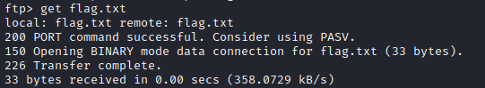

service: ftp
ftp <address-server> <port>
local-file [remote-file] → store a local file on the remote machine. If remote-file is left unspecified, the local file name is used.
the local file that we want to upload must be placed inside the directory from where you run the FTP client
To get a file from an ftp
this will download the file in the folder from where we have launched ftp